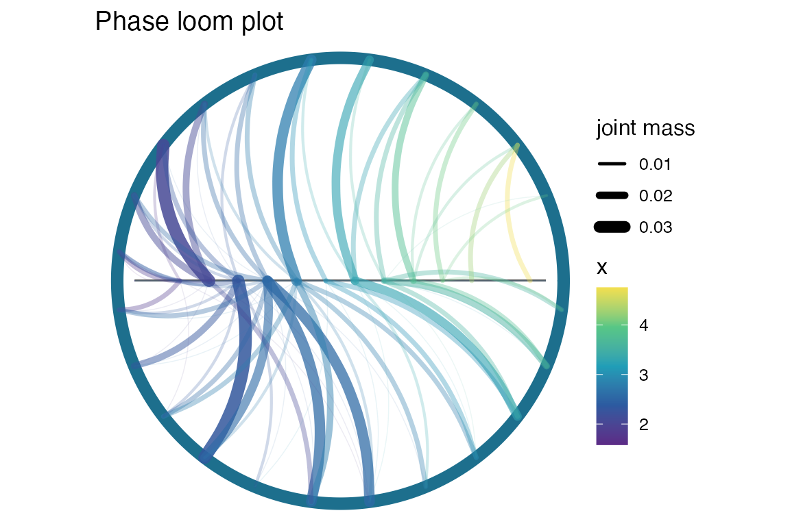
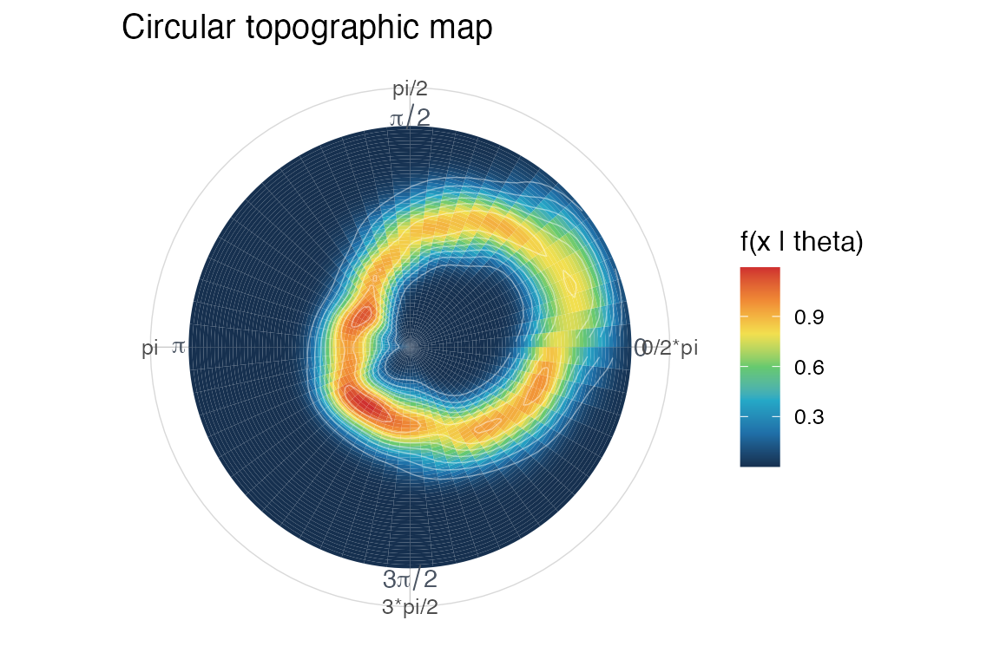
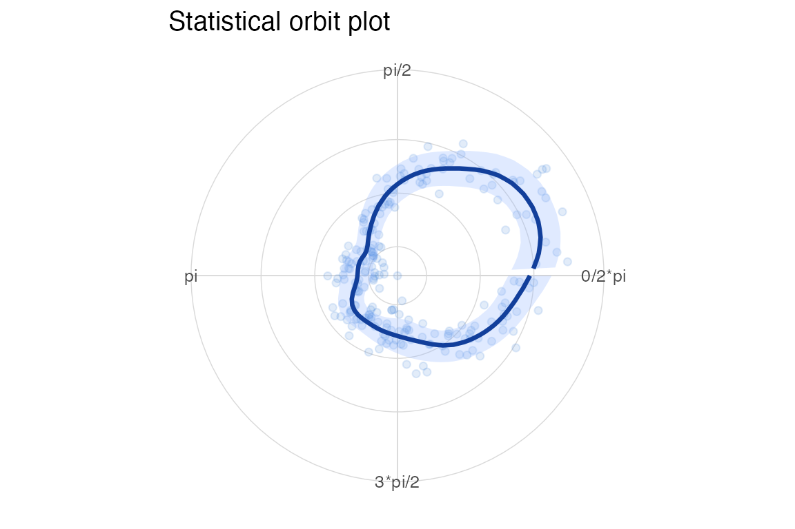
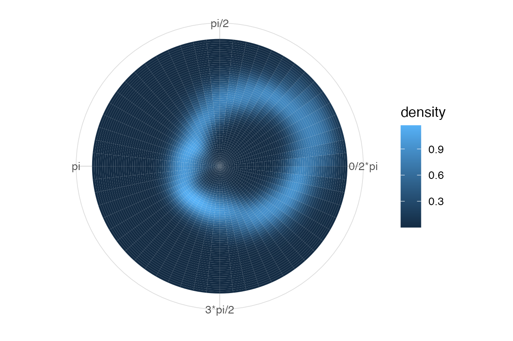
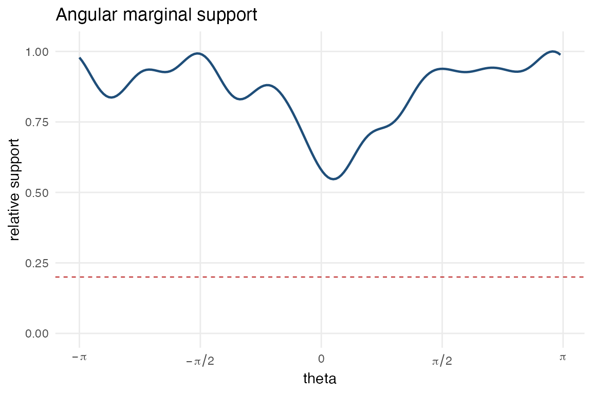

Circular-linear workflow
Source:vignettes/circular-linear-workflow.Rmd
circular-linear-workflow.RmdThis vignette shows a basic circular-linear workflow. The conditioning variable is an angle and the response is real-valued, so the sample space is a cylinder.
library(ggplot2)
#> Warning: package 'ggplot2' was built under R version 4.5.2
library(ggcircular)
dat <- simulate_cyl_diagnostic(
n = 220,
scenario = "smooth",
seed = 1
)The phase loom displays conditional binned mass. The circular topography estimates a conditional density. The statistical orbit summarizes the local conditional mean and spread.
plot_phase_loom(dat$theta, dat$x, n_sectors = 24, n_x_bins = 14, max_flows = 80)
#> Warning in ggplot2::geom_segment(ggplot2::aes(x = -0.92, y = 0, xend = 0.92, : All aesthetics have length 1, but the data has 220 rows.
#> ℹ Please consider using `annotate()` or provide this layer with data containing
#> a single row.
plot_circular_topography(dat$theta, dat$x, n_theta = 60, n_x = 60)
plot_stat_orbit(dat$theta, dat$x, n_theta = 60)
The same topography is available as a ggplot2
statistical layer.
ggplot(dat, aes(x = theta, y = x)) +
stat_circular_topography(n_theta = 60, n_x = 60, kappa = 14) +
coord_circular() +
scale_x_circular_radians() +
theme_circular()
For interpretation, pair conditional displays with a support diagnostic.
plot_marginal_support(dat$theta, kappa = 14, relative_threshold = 0.20)